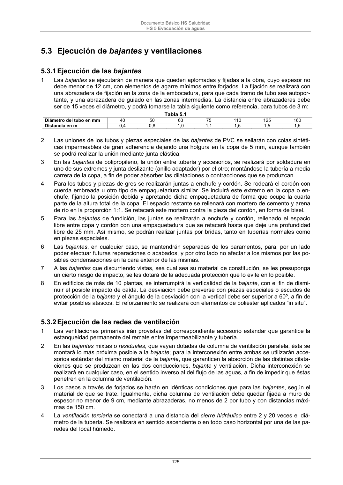

DB-HS · 5.2 Ejecución de las redes de pequeña evacuación · versión 2022-06-14 · capa oficial
Formatos: JSON compacto · Markdown · PDF fuente
Ámbito del documento · texto del ámbito · documento y tablas
ID técnico a0280 · PDF pág. 124-125 · jerarquía no validada por persona · contrastado con el literal de la página 124 (candidato tipográfico); no validado por persona · padre: a0250
5.2 Ejecución de las redes de pequeña evacuación 1 Las redes serán estancas y no presentarán exudaciones ni estarán expuestas a obstrucciones. 2 Se evitarán los cambios bruscos de dirección y se utilizarán piezas especiales adecuadas. Se evita- rá el enfrentamiento de dos ramales sobre una misma tubería colectiva. 3 Se sujetarán mediante bridas o ganchos dispuestos cada 700 mm para tubos de diámetro no supe- rior a 50 mm y cada 500 mm para diámetros superiores. Cuando la sujeción se realice a paramen- tos verticales, estos tendrán un espesor mínimo de 9 cm. Las abrazaderas de cuelgue de los forja- dos llevarán forro interior elástico y serán regulables para darles la pendiente adecuada. 4 En el caso de tuberías empotradas se aislarán para evitar corrosiones, aplastamientos o fugas. Igualmente, no quedarán sujetas a la obra con elementos rígidos tales como yesos o morteros. 5 En el caso de utilizar tuberías de gres, por la agresividad de las aguas, la sujeción no será rígida, evitando los morteros y utilizando en su lugar un cordón embreado y el resto relleno de asfalto. 6 Los pasos a través de forjados, o de cualquier elemento estructural, se harán con contratubo de material adecuado, con una holgura mínima de 10 mm, que se retacará con masilla asfáltica o ma- terial elástico. 7 Cuando el manguetón del inodoro sea de plástico, se acoplará al desagüe del aparato por medio de un sistema de junta de caucho de sellado hermético. Documento Básico HS Salubridad HS 5 Evacuación de aguas 125

PDF fuente redistribuible: copia fiel enlazada en esta página (SHA256 verificado).